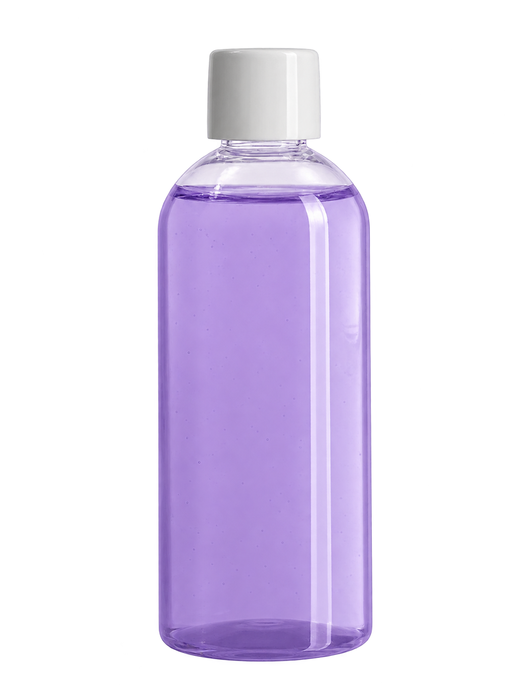

⚗️
Hecho en el laboratorio
Un proyecto escolar desarrollado mediante mediciones y una secuencia de preparación.
Te presentamos Desinova: una propuesta creada por estudiantes que une ciencia, creatividad y precisión en cada detalle.
La tangente perfecta hacia una limpieza efectiva.
Descubrir Desinova ↗
Desinova nació como un proyecto de ciencias de 1B. Desde su preparación hasta su identidad visual, cada parte refleja el trabajo y la creatividad del equipo.
Un proyecto escolar desarrollado mediante mediciones y una secuencia de preparación.
Las proporciones nos permiten comprender cómo se relacionan las cantidades de una mezcla.
El morado lila, nuestro personaje y el nombre Desinova dan personalidad al proyecto.
Conocemos nuestra fórmula a través de la observación, la medición y el aprendizaje en el laboratorio.
Volumen total indicado en nuestro proyecto.
470 ml de agua
30 ml correspondientes a los seis componentes indicados.
En matemáticas, una recta tangente toca una curva en un punto. Tomamos esa idea como símbolo de precisión: buscamos que cada ingrediente tenga una cantidad definida y un propósito dentro del proyecto.
Además, las proporciones permiten estudiar cómo cambian las cantidades cuando cambia el volumen total. Las matemáticas también aparecen en el laboratorio.
Una idea nacida en ciencias y desarrollada con creatividad por los estudiantes de 1B.
Detrás de cada presentación existe un proceso de investigación, planificación y trabajo en equipo.
Identificamos una necesidad relacionada con la limpieza.
Trabajamos con cantidades y observamos el proceso.
Elegimos el nombre, los colores y el eslogan.
Compartimos nuestro proyecto con la comunidad escolar.
Este proyecto representa nuestra curiosidad, el trabajo en equipo y las ganas de aprender haciendo. Desde la idea inicial hasta el último detalle de nuestra imagen, Desinova es una creación que compartimos con orgullo.
Una innovación de 1B 💜
Una idea nacida en ciencias. Una identidad creada en equipo.
Volver al inicio ↑